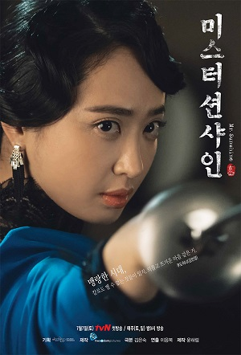

|  | 쿠도 히나호텔 '글로리' 사장 |
"누구든 너를 헤하려 하면 울기보다는 |
|
한성 바닥에서 젊고 아름다운 미망인은 호텔을 찾는 이들에게 또 하나의 유흥거리였다. 모던보이, 댄디보이, 룸펜, 조선의 보이란 보이들은 죄다 호텔 ‘글로리’로 몰려들었고 히나는 연일 최고 매출액을 경신했다. 히나는 나라님도 부럽지 않았다. 조선의 모든 권력은 사내들에게 있었으나 그 사내들은 언제나 호텔 ‘글로리’에 있었으니까. 히나는 매일 밤 제국주의자들의 세치 혀에 처참히 찢기는 조선을 웃으며 지켜보았다. 조선도 울기보단 물기를 택해야 할 텐데. 안타까웠다. 언제나 두 번째의 삶이었다. 두 번째 이름이 진짜 이름이 됐고, 두 번째 나라가 진짜 나라가 되었으며, 이제 저 두 번째 남자만 자신의 남자가 되면 완벽한 삶이었다. 그 남잔 다름 아닌 유진이었다. 헌데 저 남자, 딴 여자를 보고 있다. 사대부댁 애기씨랬다. |